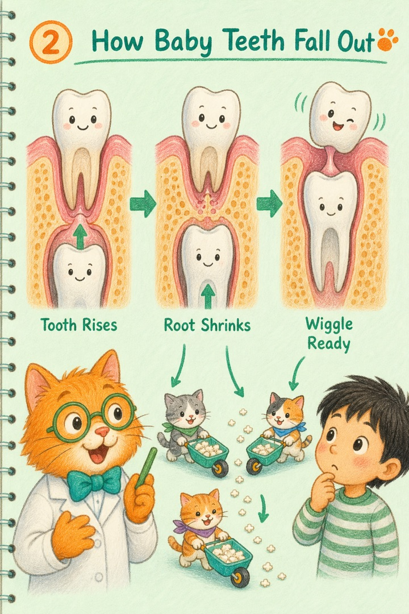
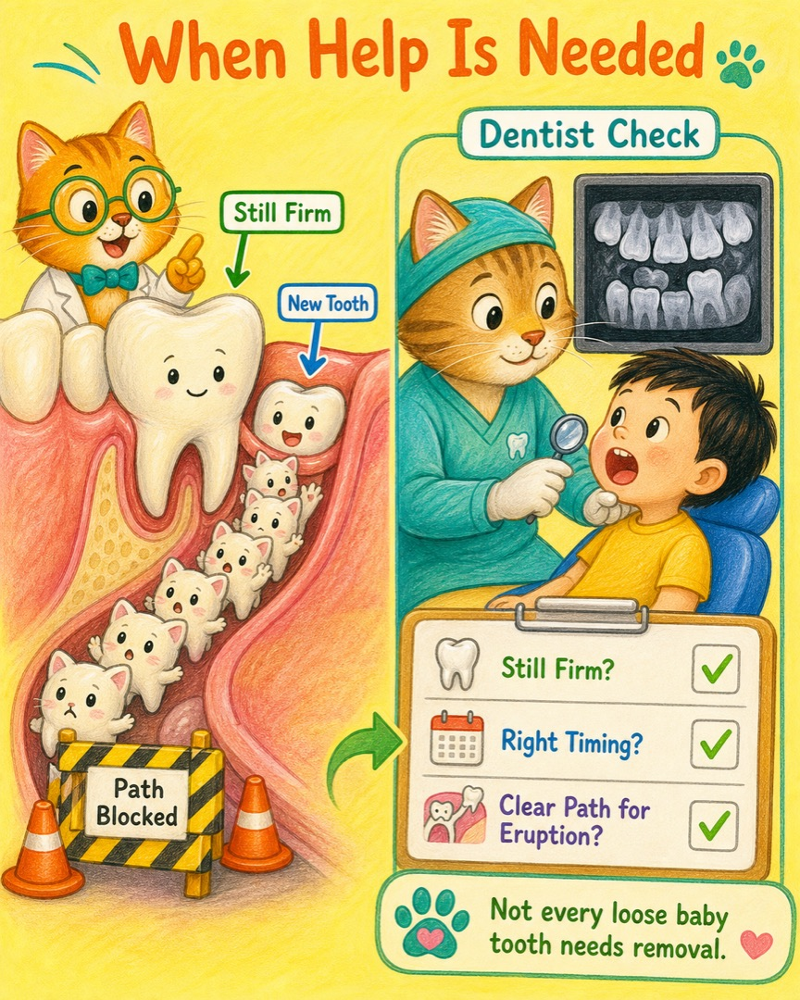
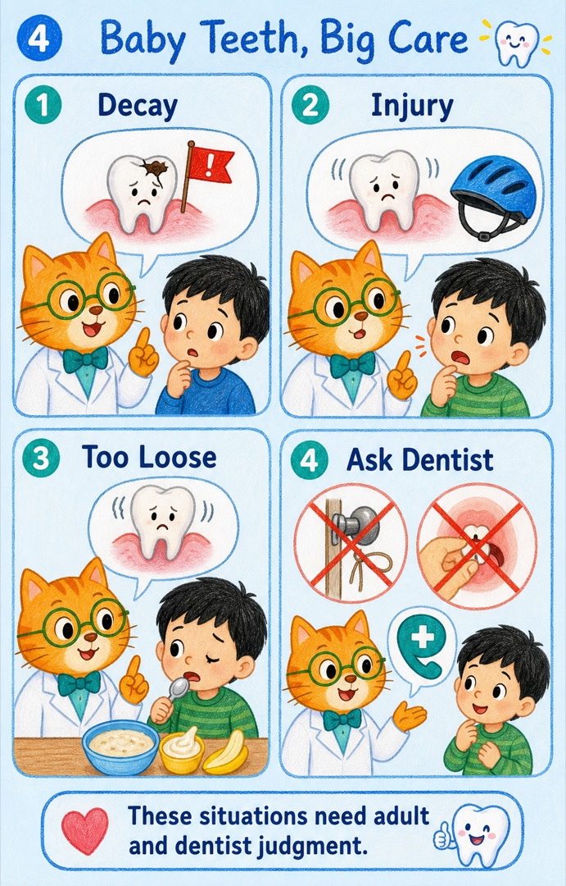
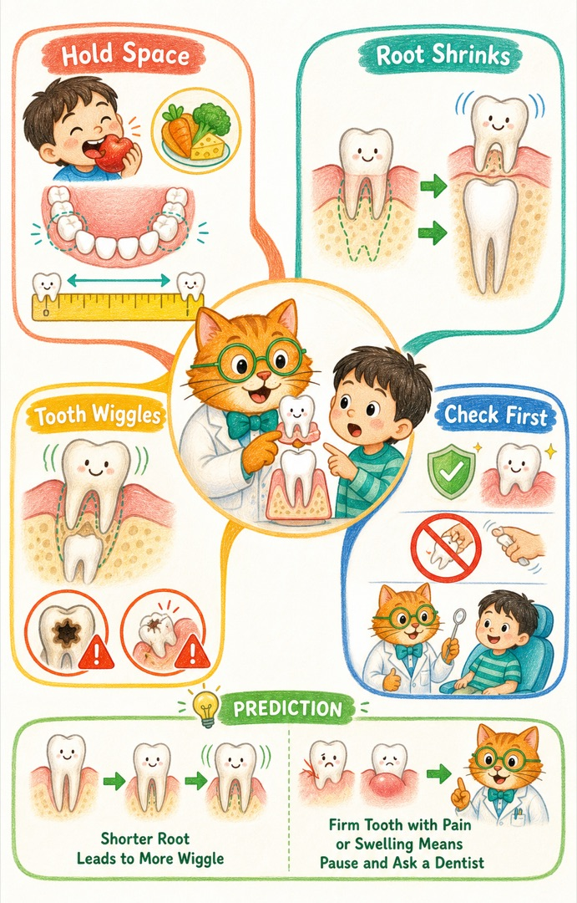

恒牙已经出现，乳牙却还很牢
新牙从旁边或后面冒头，旧牙仍挡着通道，牙医会判断是否需要让路。
乳牙明明还站在嘴巴里，为什么有时要请它离开？喵博士和探险家一起去看牙龈下面那场安静的“换班”。
在我们的世界里，那其实是乳牙小猫和恒牙小猫在轮流值班。
乳牙小猫不是“没用的小牙”。恒牙还没长好时，它先负责咬食物、帮忙说话，还像一位认真站岗的占位员，替后来的恒牙守住位置。
所以，拔乳牙不是换牙的必修课。时间没到就赶它走，旁边的牙齿可能慢慢挤过来，让恒牙小猫的入口变窄。


新牙从旁边或后面冒头，旧牙仍挡着通道，牙医会判断是否需要让路。
如果牙齿已经很难修复，继续留下可能带来疼痛或感染风险。
摔伤后的牙齿可能碰到恒牙的生长区域，也可能影响吃饭，需要检查。
牙医会结合口内检查和影像，看恒牙的位置、空间与萌出时机再决定。


如果乳牙下面没有对应的恒牙，健康的乳牙有时会继续留下来工作很久。即使乳牙已经松动，也常常只需要给它时间，让它自然完成换班。
这些情况请尽快找牙医：牙痛持续、牙龈明显肿起或流脓、脸部肿胀、牙齿摔伤后移位，或者恒牙已经长出而乳牙长时间没有变松。
乳牙意外撞掉后不要自己塞回牙槽；让牙医检查下面正在发育的恒牙是否受到影响。
如果乳牙牙根吸收得越多，它通常会越来越松，轻轻晃动的幅度也会变大。
如果乳牙仍很牢、很痛或周围肿起来，就先停手，请牙医看看：这可能不是一次顺利的自然换班。
下一次照镜子时，探险家可以画下旧牙和新牙的位置：新牙是在正下方排队，还是从旁边探出了脑袋？这张路线图，会变成下一次和喵博士继续追踪的线索。
